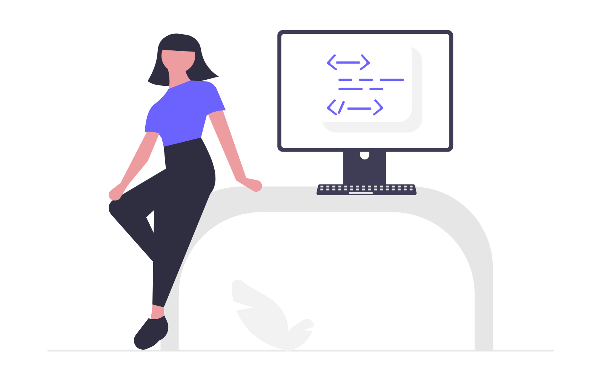
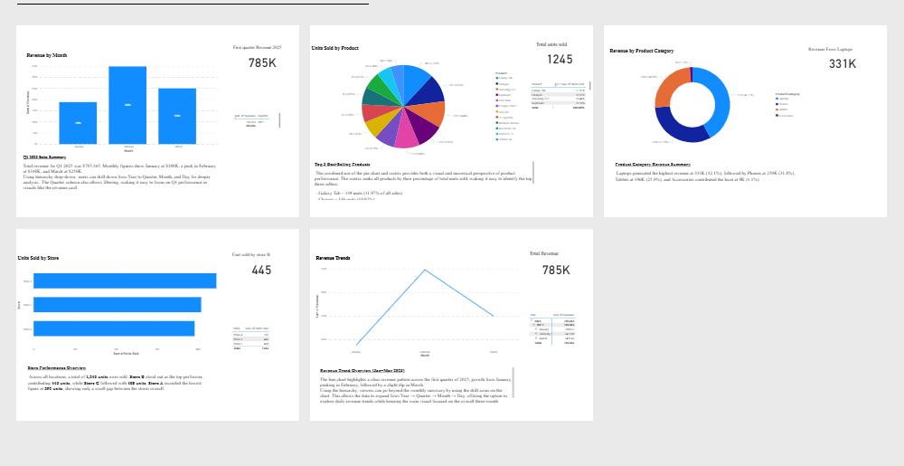
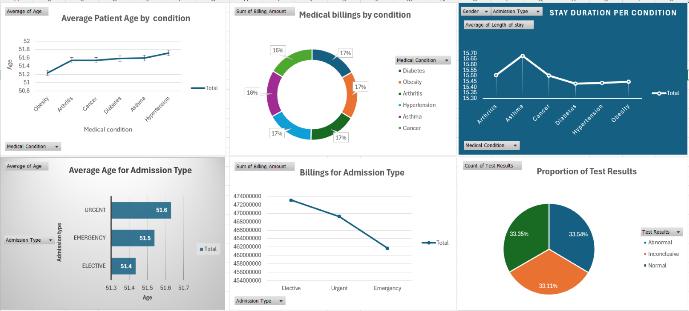
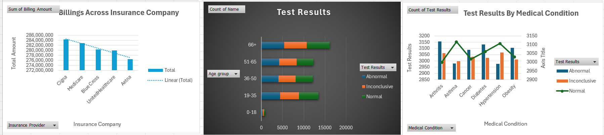
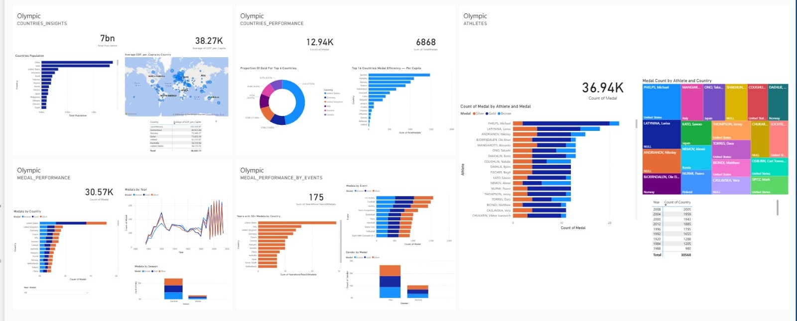

Hello! I’m Maria Adesanya, a Junior Data Analyst skilled in Python, SQL, Power BI, and Excel.
I enjoy solving problems through data cleaning, analysis, and visualization — from creating interactive dashboards to automating reports.
My projects showcase work in sales performance, healthcare insights, and process efficiency.
Scroll down to explore my portfolio and see how I transform data into decisions.

This Power BI dashboard analyzes sales data for Q1 2025, showing total revenue, top product categories, best-selling stores and products, and revenue trends over the three months.
View Dashboard

Analyzed patient demographics, hospital admissions, medical costs, and test results to uncover trends in healthcare usage. Findings show consistent patient age across conditions, higher costs for elective admissions, varied billing by insurance providers, and evenly distributed clinical outcomes.
View Project
Built an interactive Power BI report to explore medals by country, year, season, and athlete. Highlights include a gold-medal share view, per-capita medal efficiency, and country profiles with population & GDP per capita context.
View ScreenshotThis project analyzes customer sentiment from Amazon product reviews using Python. The pipeline includes data cleaning, tokenization, vectorization, and training a classification model. The model predicts whether a review is positive, neutral, or negative.
View CodeHi, I’m Maria Adesanya! I’m passionate about turning data into actionable insights. I enjoy working with Python, SQL, Power BI, and Excel. I love designing dashboards, automating tasks, and helping teams make data-driven decisions.
Email: m_adesanya@outlook.com
LinkedIn: linkedin.com/in/maria-ade-profile
GitHub: github.com/Maria-Ade/portfolio